Урок 1: Знакомство и введение в AI
Полный конспект для самостоятельного изучения. От базовых понятий до архитектуры GPT — всё, что нужно знать о современном искусственном интеллекте.
🎯 Цели урока
После изучения этого конспекта вы сможете:
Понимать основы AI
Объяснять, что такое AI, и различать уровни: Narrow, General, Super
Различать подходы
Отличать Rule-Based системы от Machine Learning и объяснять преимущества каждого
Разбираться в типах ML
Supervised, Unsupervised и Reinforcement Learning — когда и зачем
Знать экосистему
Ориентироваться в моделях (GPT, Claude, Gemini), понимать токены и промптинг
Константин Пинчуковский
Преподаватель курса
Партнёр и CIO в SkaiLab (AI-агентство), 5 лет в венчурных фондах, ex-CTO Credo, ex-CPO в EdTech (Германия).
По данным IBM Global AI Adoption Index 2022: 34% компаний отмечают недостаток понимания AI, 35% обеспокоены дефицитом навыков, 77% сотрудников опасаются потери рабочих мест. Понимание основ AI — первый шаг к преодолению этих барьеров.
🧠 Что такое искусственный интеллект
Определение AI, его возможности и три уровня развития
Искусственный интеллект (AI) — это область технологий, где машины выполняют задачи, обычно требующие человеческого интеллекта: распознавание речи, понимание текста, принятие решений, обучение на опыте, генерация контента.
Что AI умеет уже сегодня
Современный AI — это не научная фантастика, а реальные технологии, которые вы используете каждый день:
Понимание речи
Siri, Алиса, голосовой поиск Google — AI распознаёт слова и понимает их смысл в контексте
Распознавание образов
Face ID, контроль качества на производстве, анализ медицинских снимков — AI "видит" и понимает изображения
Принятие решений
Рекомендации Netflix, одобрение кредита, автопилот Tesla — AI анализирует данные и делает выбор
Генерация контента
ChatGPT пишет тексты, Midjourney создаёт изображения, GitHub Copilot генерирует код
Три уровня AI
Учёные выделяют три уровня развития AI. Важно понимать, что всё, что существует сегодня — это первый уровень.
| Тип | Описание | Статус | Примеры |
|---|---|---|---|
| 🎯 Narrow AI (узкий) |
AI для одной конкретной задачи. Не умеет делать ничего другого. Это весь AI, который существует сегодня. | Существует | Google Translate, Siri, Netflix, Gmail-спам, Алиса |
| 🧠 General AI (общий) |
AI с широкими возможностями, способный решать задачи в разных доменах на уровне человека. | В разработке | Маркетинг + Финансы + HR + R&D + IT |
| ⚡ Super AI (супер) |
Гипотетический AI, превосходящий человека во всём. Его пока нет и неизвестно, появится ли. | Не существует | Только в теории и фантастике |
Когда вам предлагают "AI-решение", это всегда Narrow AI — система, заточенная под конкретную задачу. ChatGPT кажется "общим", но на самом деле он специализируется на одной задаче: предсказании следующего слова в тексте. Просто эта задача оказалась настолько фундаментальной, что позволяет решать множество прикладных задач.
⏩ Rule-Based vs Machine Learning
Два фундаментально разных подхода к созданию интеллектуальных систем
Существуют два принципиально разных подхода к решению задач с помощью компьютера. Понимание разницы между ними — ключ к пониманию всего AI.
📋 Rule-Based (правила)
Человек вручную пишет правила: ЕСЛИ X, ТО Y. Система строго следует инструкциям.
- ✅ Предсказуемость и прозрачность
- ✅ Легко объяснить логику
- ❌ Не адаптируется к новым ситуациям
- ❌ Сложно масштабировать
- ❌ Ломается при нестандартных входных данных
🤖 Machine Learning (ML)
Машина сама находит закономерности в данных. Учится на примерах, а не на правилах.
- ✅ Адаптируется к новым данным
- ✅ Масштабируется
- ✅ Работает со сложными задачами
- ❌ Нужен датасет для обучения
- ❌ "Чёрный ящик" — сложно объяснить решение
✉️ Пример: фильтрация спама
Этот пример наглядно показывает, почему ML лучше справляется со сложными задачами.
⚖️ Что значит обучить модель
Датасеты, этапы обучения и метрики качества
Датасет — набор данных, собранных и структурированных для обучения или проверки модели AI. Это "учебник" для модели: чем больше и качественнее данные, тем лучше модель решает задачу.
Этапы обучения модели
Обучение AI-модели — это не магия. Это структурированный процесс, похожий на обучение студента:
1. Сбор датасета
Набор данных, размеченных человеком. Например, 100 000 писем с пометками "спам" / "не спам". Качество данных определяет качество модели — garbage in, garbage out.
2. Обучение (Training)
Модель "прочитывает" обучающие данные и находит закономерности. Как студент, который решает задачи из учебника и постепенно понимает принципы.
3. Валидация (Validation)
Проверка на новых, но тоже размеченных данных — как контрольная работа в середине семестра. Помогает настроить параметры модели.
4. Тестирование (Testing)
Финальная проверка на данных, которых модель никогда не видела — как экзамен. Только по этим результатам судят о реальном качестве модели.
📊 Метрики качества модели
Как понять, хорошо ли работает модель? Есть три ключевые метрики:
🎯 Accuracy (точность)
правильные / все предсказания
Из 100 писем модель правильно определила 90 → accuracy = 90%. Но accuracy может обманывать: если в данных 95% не-спама, модель может просто всё называть "не спам" и получить 95%.
🔍 Precision (точность)
верный спам / весь отмеченный как спам
Модель отметила 20 писем как спам, из них 15 реально спам → precision = 75%. Показывает, насколько можно доверять, когда модель говорит "спам".
📡 Recall (полнота)
найденный спам / весь реальный спам
Из 30 реальных спам-писем модель нашла 15 → recall = 50%. Показывает, какую долю спама модель пропустила. Критично для медицины и безопасности.
⏳ Типы машинного обучения
Supervised, Unsupervised и Reinforcement Learning
Существует три основных типа машинного обучения. Каждый подходит для своего класса задач.
🎓 Supervised Learning
Обучение с учителем
Принцип: Модель учится на данных, размеченных человеком. Каждый пример имеет "правильный ответ".
Аналогия: Учитель показывает ученику карточки с ответами: "это яблоко", "это банан". Со временем ученик сам определяет фрукты.
Примеры в бизнесе:
- Предсказание покупки по данным клиента
- Классификация заявок (жалоба / вопрос / благодарность)
- Фильтрация спама в почте
🔎 Unsupervised Learning
Обучение без учителя
Принцип: Данные без разметки. Модель сама находит паттерны, группирует и структурирует.
Аналогия: Дайте ребёнку мешок с разными игрушками. Он сам разложит их по кучкам — машинки к машинкам, мячики к мячикам.
Примеры в бизнесе:
- Сегментация клиентской базы (VIP, разовые, уходящие)
- Обнаружение аномалий в транзакциях
- Тематический анализ отзывов клиентов
🎮 Reinforcement Learning
Обучение с подкреплением
Принцип: Модель пробует действия и получает награду или наказание. Учится методом проб и ошибок.
Аналогия: Как дрессировка собаки: хорошее поведение — угощение, плохое — нет. Со временем собака учится, какое поведение приводит к награде.
Примеры в бизнесе:
- Динамическое ценообразование (оптимальная цена)
- Автопилот и роботы
- Оптимизация рекламных ставок
🎮 Интерактив: определите тип обучения
Перетащите каждый бизнес-кейс в правильную категорию.
🔄 Дискриминативный vs Генеративный AI
Один анализирует данные, другой создаёт новые
Все AI-системы можно разделить на два больших направления по тому, что они делают с информацией.
🔍 Дискриминативный AI
Определяет, классифицирует, распознаёт. Задача: определить класс или категорию.
"Это птица? — Да, это птица."
- 📋 Классификация (товары, спам, заявки)
- 👁️ Object Detection (люди, объекты на видео)
- 📷 Computer Vision (контроль качества)
- 📄 OCR (чеки, накладные, документы)
- 📈 Прогнозирование (спрос, закупки)
- 👥 Кластеризация (сегментация клиентов)
- 🎤 ASR (распознавание речи)
- ⚠️ Аномалии (отклонения, поломки)
✨ Генеративный AI
Создаёт новые данные: текст, изображения, видео, код, аудио.
"Нарисуй ворону на снегу."
- ✍️ Текст (копирайтинг, отчёты, инструкции)
- 🖼️ Изображения (дизайн, баннеры, UI-концепты)
- 🎬 Видео (ролики, презентации)
- 🎤 Аудио (озвучка, голосовые ассистенты)
- 💻 Код (автодополнение, генерация функций)
- 🎵 Музыка (фоновые треки, джинглы)
До 2022 года большинство бизнес-применений AI были дискриминативными: классификация, прогнозирование, детекция. Генеративный AI (ChatGPT, Midjourney) изменил ландшафт, дав каждому сотруднику инструмент для создания контента. Но дискриминативный AI никуда не делся — он по-прежнему решает 80% задач автоматизации в бизнесе.
🧠 Нейронные сети
Метод в ML, вдохновлённый работой мозга
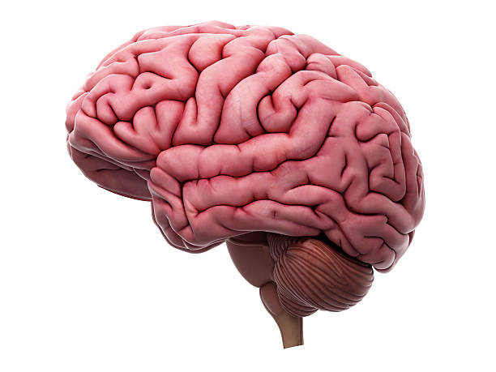
Представьте команду экспертов, работающих по цепочке. Первый замечает простые признаки ("есть текст"), второй — более сложные ("текст про скидку"), третий выносит решение ("это спам"). Каждый "нейрон" — такой эксперт, а "вес" — степень его влияния на итоговое решение.
Как данные проходят через нейросеть
Рассмотрим на примере распознавания яблока на фото:
1. Входной слой
Сырые данные
Сюда попадают пиксели изображения. Каждое число — отдельный нейрон.R=255 G=50 B=0 size=0.7
2. Скрытый слой 1
Простые признаки
Ищет простые признаки: есть ли край, какой цвет, есть ли тень.край? 0.82 цвет? 0.95 тень? 0.33
3. Скрытый слой 2
Сложные понятия
Комбинирует простые признаки: "круглое", "красное", "гладкое".круглое 0.91 красное 0.88
4. Выходной слой
Ответ модели
Финальный ответ — вероятность каждого варианта.
🍎 яблоко: 95% 🍅 помидор: 5%
Ключевые понятия
🤖 Как работает GPT
Архитектура Transformer и принципы генерации текста
GPT (Generative Pre-trained Transformer) — это архитектура, которая совершила революцию в AI. Она была представлена в статье "Attention Is All You Need" (2017) и лежит в основе ChatGPT, Claude, Gemini и большинства современных языковых моделей.
5 шагов обработки текста в GPT
1. Токенизация
Текст разбивается на токены — небольшие фрагменты. Токен может быть словом, частью слова или знаком. "Привет, как дела?" → ["Привет", ",", " как", " дела", "?"]
2. Присвоение ID
Каждый токен получает уникальный числовой ID из словаря модели. "Привет" → 15339, "," → 11, "как" → 2482. У GPT-4 словарь содержит ~100 000 токенов.
3. Эмбеддинги
ID превращается в вектор из сотен чисел, кодирующий смысл токена. Близкие по смыслу слова имеют близкие векторы: "кот" и "котёнок" — рядом, "кот" и "машина" — далеко.
4. Механизм внимания (Attention)
Главное изобретение Transformer: каждое слово "смотрит" на все остальные, определяя их важность. Слово "банк" получает разные значения в "речной банк" и "банк данных". Именно Attention позволяет GPT понимать контекст.
5. Генерация текста
Модель вычисляет вероятность следующего токена и выбирает наиболее подходящий. "Чтобы" (35%), "Для" (20%), "Ингредиенты" (15%)... Процесс повторяется для каждого нового токена.
GPT не думает и не понимает. Он предсказывает наиболее вероятное следующее слово на основе статистики триллионов текстов. Это как продвинутый автодополнитель в телефоне, но в масштабе всего человеческого знания. Именно поэтому GPT иногда "выдумывает" факты — он генерирует текст, который выглядит правильным, но не проверяет его истинность.
🏗️ Экосистема AI: как все связано
Иерархия терминов, сравнение моделей и ценообразование
🌍 Как все термины связаны
AI — это широкая область. Все термины, которые мы изучили, вложены друг в друга как матрёшки. Нажмите на каждый уровень, чтобы узнать подробнее.
👆 Нажмите на любой уровень
Нажмите на кольцо, чтобы увидеть описание каждого уровня.
📊 Сравнение моделей
| Параметр | GPT-4 | Claude | Gemini | LLaMA |
|---|---|---|---|---|
| Провайдер | OpenAI | Anthropic | Meta | |
| Контекст | 128K токенов | 200K токенов | 1M токенов | 128K токенов |
| Тип | Закрытая | Закрытая | Закрытая | Открытая |
| Мультимодальность | Текст + изображения | Текст + изображения | Текст + изображения + видео | Текст |
💬 Что такое контекст
Контекстное окно — это "оперативная память" модели. Всё, что модель может учитывать при генерации ответа, должно помещаться в контекст:
💬 История диалога
Все предыдущие сообщения в текущем чате. Модель "помнит" контекст разговора только в рамках окна.
⚙️ Системный промпт
Глобальные правила: стиль ответа, ограничения, роль. Невидим для пользователя, но влияет на поведение.
📄 Подгружаемые данные
Документы, база знаний, примеры. Модель может анализировать загруженные файлы в рамках контекста.
💰 Как зарабатывают модели
💳 Подписка
- ChatGPT Plus / Claude Pro — ~$20/мес
- Для личного использования
- Включает доступ к топовым моделям
- Лимиты на количество запросов
💰 API (Pay-as-you-go)
- GPT-4o: $5/1M вход, $15/1M выход
- Для бизнес-интеграций
- 1000 токенов ~ 600 слов на русском
- Нет лимитов (платишь за использование)
⚔️ Возможности AI: каталог моделей
Основные типы AI-моделей и их применения
Современный AI — это не только текст. Существует целый каталог типов моделей, каждый из которых специализируется на своём виде данных.
📝 LLM (текст)
Генерация и понимание текста
Модели: GPT-4, Claude, Gemini, Mistral, LLaMA
Применение: копирайтинг, суммаризация, перевод, программирование, анализ документов, ответы на вопросы
🎤 STT (речь → текст)
Распознавание речи
Модели: Whisper, Google STT, Azure Speech
Применение: транскрибация звонков, субтитры, голосовые команды, протоколирование встреч
🔊 TTS (текст → речь)
Синтез речи
Модели: ElevenLabs, WaveNet, Amazon Polly
Применение: озвучка видео, голосовые ассистенты, аудиокниги, IVR-системы
🖼️ TTI (текст → изображение)
Генерация изображений
Модели: DALL-E, Midjourney, Stable Diffusion
Применение: баннеры, дизайн-концепты, иллюстрации, прототипы UI
🎬 TTV (текст → видео)
Модели: Runway, Pika Labs, Sora
Генерация видеороликов из текстового описания. Технология быстро развивается.
👁️ CV (компьютерное зрение)
Модели: YOLO, CLIP, OpenCV
Распознавание объектов на изображениях и видео, контроль качества, безопасность.
🎯 Промптинг — ключ к эффективному AI
Как правильно формулировать запросы к AI-моделям
Промпт — это запрос, который вы отправляете модели. Качество промпта напрямую определяет качество результата. Хороший промпт может превратить средний ответ в отличный.
Зачем учиться промптингу?
Точность
Чёткий запрос помогает модели лучше понять контекст и дать релевантный ответ. Размытый запрос — размытый результат.
Экономия
Краткие и структурированные запросы снижают расход токенов. При оплате за API каждый лишний токен — деньги.
Скорость
Хороший промпт позволяет получить нужный результат с первого раза, без цепочки уточнений и переделок.
📋 Формула хорошего промпта
Эффективный промпт обычно содержит несколько ключевых элементов:
Попробуйте составить промпт по формуле "Роль + Задача + Контекст + Формат" для своей рабочей задачи. Например: "Ты — HR-менеджер. Напиши шаблон письма с отказом кандидату, который прошёл 3 этапа собеседования. Тон — уважительный, длина — 5-7 предложений."
📚 Рекомендуемые книги по AI
Литература для углубления в тему искусственного интеллекта
Эти книги помогут вам глубже понять мир AI — от технических основ до стратегий внедрения и этических вопросов.
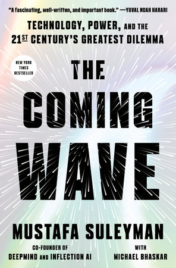
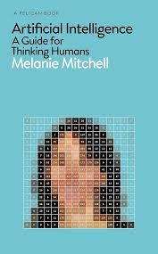
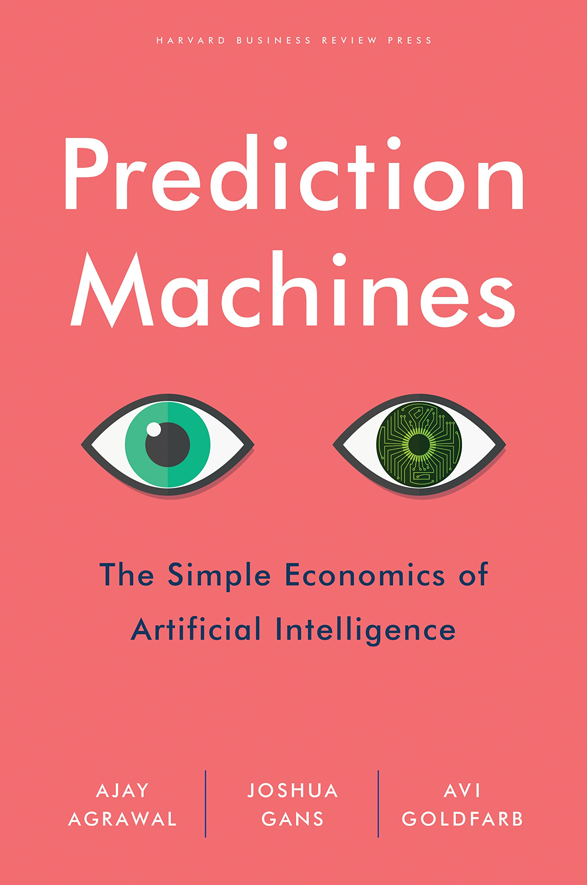
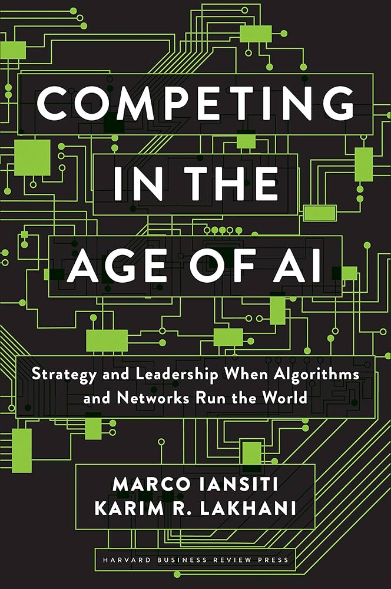
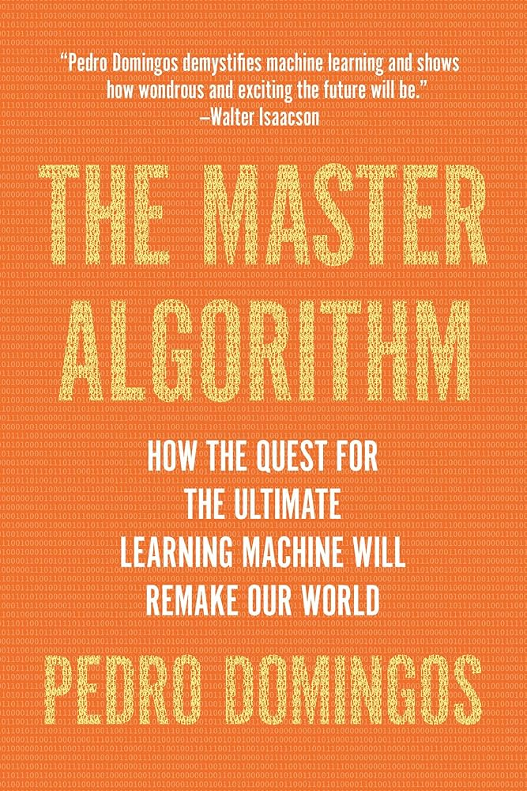
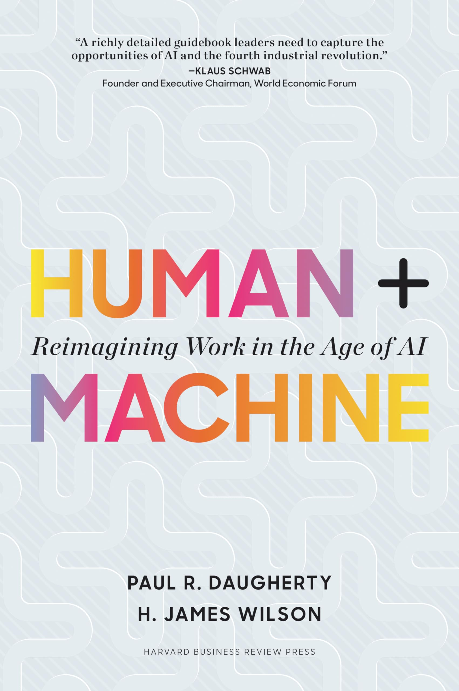
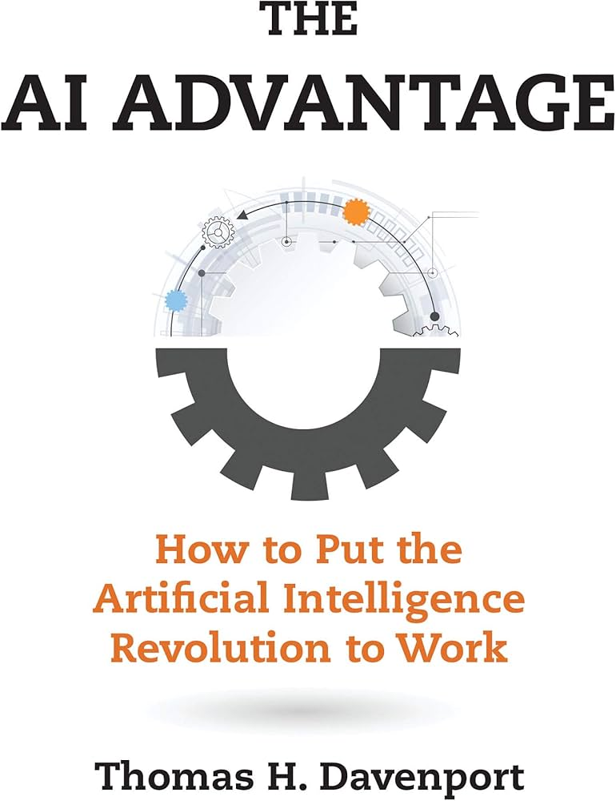
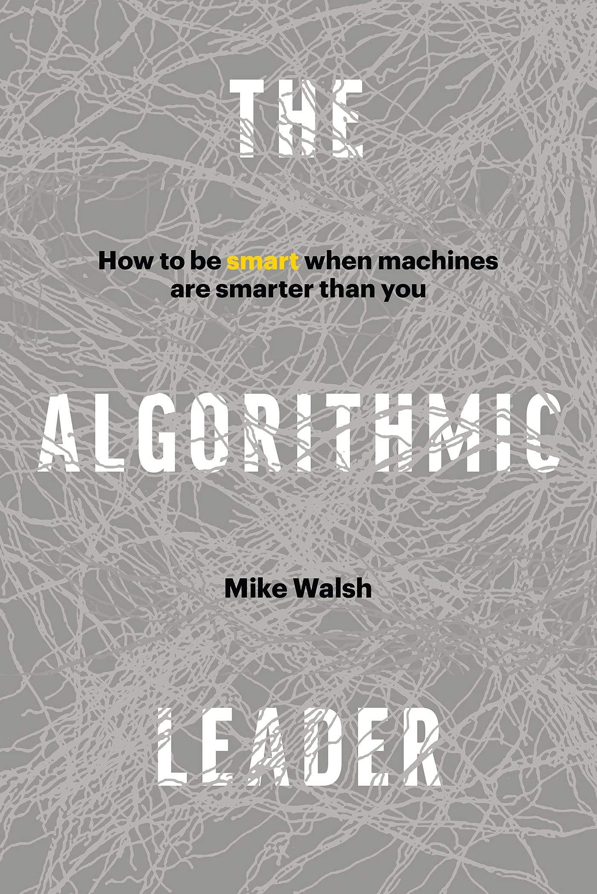
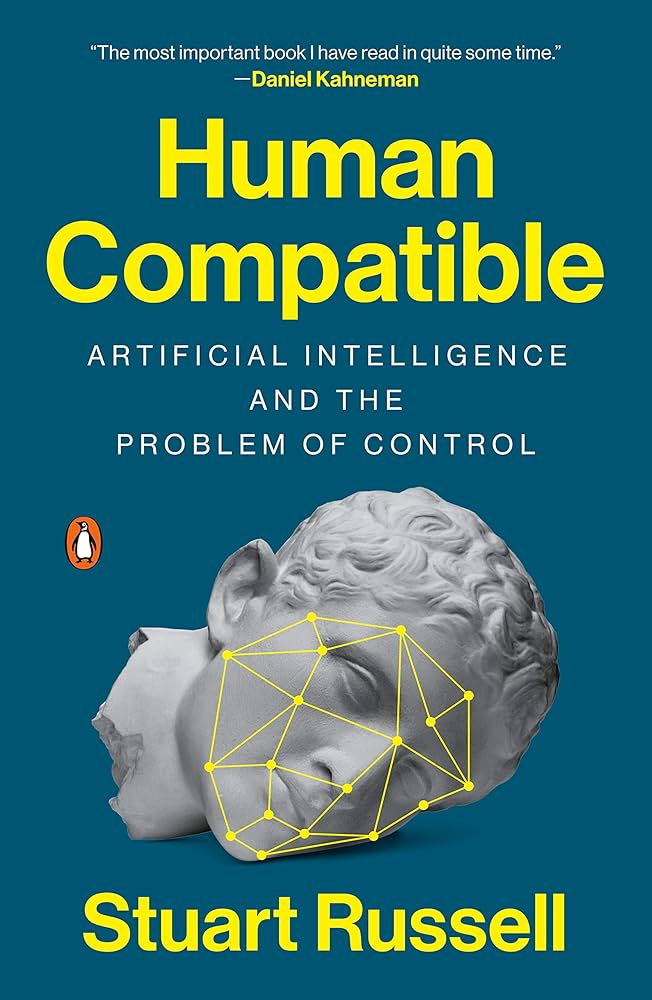
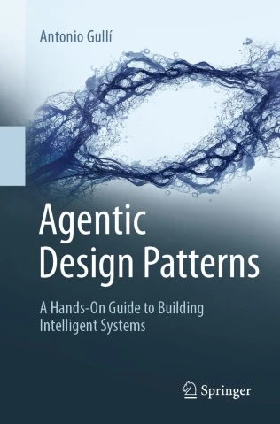
📋 Итоги урока
Краткое резюме ключевых тем
Что вы узнали
🧠 AI — это технологии, имитирующие интеллект
Narrow AI существует сегодня (Siri, Netflix, ChatGPT). General AI и Super AI — пока только в теории.
⏩ Rule-Based vs Machine Learning
Правила пишет человек (предсказуемо, но не гибко). ML учится сам на данных (гибко, но нужны данные).
⏳ Три типа ML
Supervised (с учителем), Unsupervised (без учителя), Reinforcement (с подкреплением). Каждый для своего класса задач.
🔄 Дискриминативный vs Генеративный
Один анализирует (классификация, детекция), другой создаёт (текст, изображения, код).
🤖 GPT работает как предсказатель
Токенизация → эмбеддинги → Attention → генерация следующего токена. Не думает, а статистически предсказывает.
🎯 Промптинг определяет результат
Роль + Задача + Контекст + Формат = формула хорошего запроса к AI.
🔗 Полезные ресурсы
Ссылки и инструменты для работы на курсе
🏠 Платформа курса
📊 Личный кабинет
Расписание занятий, материалы, домашние задания и прогресс: practico.ai/lk4/schedule
🔐 AI-инструменты
🌐 ChatGPT
chat.openai.com — GPT-4o, DALL-E, анализ данных
💬 Claude
claude.ai — длинный контекст, анализ документов
💎 Gemini
gemini.google.com — интеграция с Google
📈 Источники данных
IBM Global AI Adoption Index 2022
Масштабное исследование внедрения AI в компаниях. Скачать отчёт
Поздравляем!
Вы успешно завершили урок "Знакомство и введение в AI"
✅ Вы изучили:
- Что такое AI и три уровня развития
- Rule-Based vs Machine Learning
- Как обучаются модели (датасет, метрики)
- Типы ML: Supervised, Unsupervised, Reinforcement
- Дискриминативный vs Генеративный AI
- Нейронные сети и Deep Learning
- Архитектура GPT и механизм Attention
- Экосистема моделей и ценообразование
- Каталог возможностей AI
- Основы промптинга
📚 Что дальше:
Переходите к следующему уроку, чтобы глубже погрузиться в практику промптинга и научиться эффективно работать с AI-инструментами.